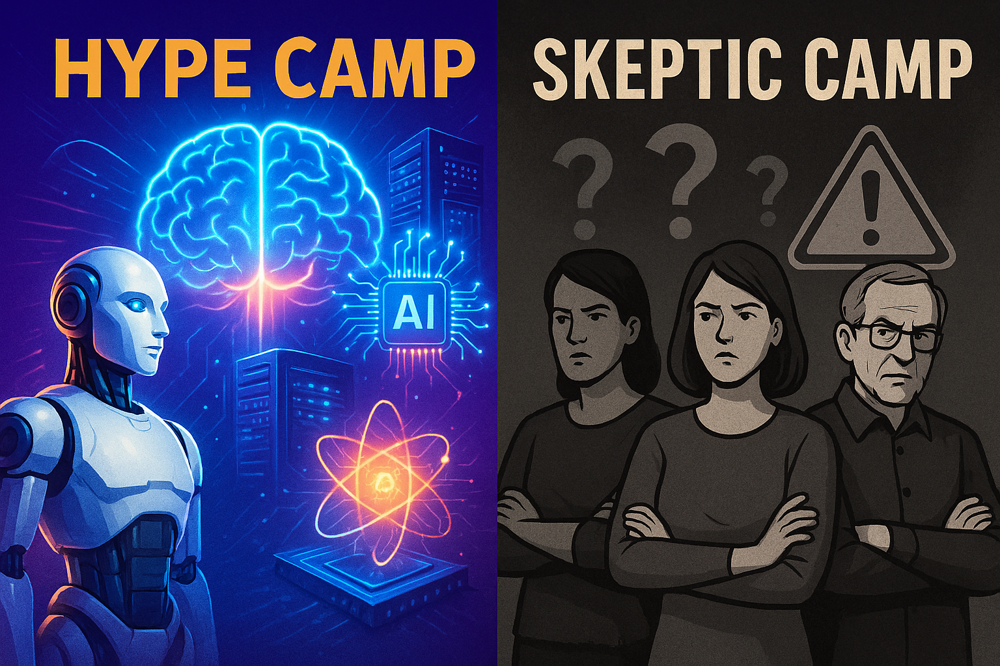

Introduction: The Two Camps and Why I Skip the AGI vs Superintelligence Divide
In today’s AI landscape, public discourse tends to split into two polarized camps:
The Hype Camp:
This group
The Hype Camp: Characteristics and Biases
The hype camp often exhibits an almost magical(and somtimes entirely magical) belief in rapid, exponential AI progress and near-term arrival of superintelligence. Here are some common features of their perspective:
This group often dominates headlines,the overwhelming majority of CEOS, social media, and surprisingly even some researchers. Their defining features include:
- Magical Thinking and Overgeneralization :
• Overgeneralization of Capabilities:They believe each new AI model release will not just incremental improvements but exponential intelligence leaps, rapidly reaching proto-superintelligence. Progress is assumed to be sudden and revolutionary, not incremental.
For example, going from GPT-4 to GPT-5 is seen not as a refinement, or just an improvment in intelligence but as the dawn of proto-superintelligence.
• Minor improvements in intelligence or demo successes are extrapolated to claims of imminent general superintelligence.Projecting capabilities far beyond what current systems can reliably deliver. A single impressive demo (e.g., writing Minesweeper in one prompt,Sora generating impressive video,genie 3 generating a weak video simulation of the world) becomes evidence that AI will soon replace entire industries or create self-aware agents.
• Superintelligence as Inevitable & Near:
• They treat superintelligence as just around the corner, sometimes within a year or two, early 2030s for the absolute latest, ignoring the deep complexities involved with developing intelligence.
⸻ example:
Hype vs. Reality: The Math Olympiad Example
⸻
The Event:
In 2025, OpenAI and DeepMind state of the art large langauge model hit gold-medal performance on International Mathematical Olympiad (IMO)-level problems, solving 5 out of 6 within competition constraints. This was the first time any AI system matched the top-tier human scores in one of the world’s hardest math contests.
The Hype Reaction:
Online, the achievement was widely hailed as evidence of proto-superintelligence. Social media threads and even some news outlets claimed that “AI has cracked math” and that a self-improving AGI might be imminent. To many, matching gold-medal human performance meant that AI could soon overtake humans across the board.
⸻
⸻
AGI and Superintelligence: A Quick Note
In this article, I won’t dwell on the definitions or debates around Artificial General Intelligence (AGI) versus superintelligence. I’ve addressed those extensively in my Future of AI: Part 2 notes, where I argue that the distinction is mostly semantic. Once an AI system reaches human-level general intelligence and runs on digital hardware, it effectively becomes a superintelligence due to speed, scalability, and other computational advantages.
If you want a deep dive into what superintelligence really means, how it arises, and why the leap from narrow AI to superintelligence is the real milestone, check out my full breakdown in those notes.
Here, we’ll focus instead on the current polarized discourse surrounding AI progress — how the hype and skeptic camps talk past each other, and why a balanced, engineer-centered perspective is badly needed.
Proto-Superintelligence: This is the first glimmer or seed of superintelligence—systems that start to show behaviors significantly beyond advanced narrow AI but aren’t fully autonomous or deeply creative yet. They might solve all known problems in a domain with help or generate novel insights, but still depend heavily on human guidance or data they’ve seen before. It’s like a “proto” (early form or precursor) phase where the jump beyond human-level intelligence is starting but not fully realized.
⸻
Early Superintelligence: This is a more robust, self-directed stage where the system autonomously pursues new knowledge, solves genuinely new problems without human prompts, and shows clear, consistent advantages over the best human experts across domains. It’s past the “proto” stage and moving toward full superintelligence but still developing.
I wont go itnto anymore detail here because I already covered superintelligence with comprehensively in my “Notes on the future of AI part 2”
⸻ ⸻
The Reality:
35/36 on a curated International Mathematical Olympiad–style benchmark is undeniably impressive for an LLM, but it’s still firmly inside the “narrow-task” zone.
That score shows:
• The model has strong symbolic manipulation skills, pattern recognition, and training data coverage for competition-style math.
• It can sometimes generalize beyond memorization — but only within the well-defined boundaries of high-school/undergraduate competition problems.
• Its success is still dependent on prior exposure to problem types, solution patterns, and formats common in training corpora.
⸻
⸻
What it doesn’t show:
• Ability to tackle novel, open mathematical problems where there is no training precedent.
• The capacity for sustained original research without heavy human steering.
• Cross-domain integration of mathematics into physics, economics, or engineering at a level that drives new theories.
While impressive, this feat is a narrow-domain win. The models:
• Used extensive compute budgets and long reasoning chains.
• Operated with human-curated problem formats and no real-world noise.
• Still failed on proofs outside the competition format.
• Are not robustly generalizing their reasoning ability to messy, ambiguous problem spaces.
⸻
⸻
what actual Signs of Actual Proto-Superintelligence in Mathematics woudl look like:
• Solves any existing competition problem with 100% reliability, no prompting tricks or special hacks.
• Consistently produces novel solutions to known problems — for example, shorter, more elegant proofs never seen before.
• Bridges disciplines autonomously, applying concepts from one field (e.g., combinatorics) to another (e.g., biology) without explicit training or guidance.
• Maintains a long-term, persistent memory of its own mathematical reasoning, building on past work seamlessly across sessions.
• Open-ended proof generation: Produces correct, peer-review-ready proofs for decades-old open problems (e.g., Riemann Hypothesis, Navier–Stokes existence and smoothness) without being tailored specifically to those problem classes during training.
⸻
⸻
2.Minimal to zero Nuance or Engineering Understanding:
• Technical details are often glossed over or misunderstood. The focus is on sensational narratives rather than balanced technical assessment.
• Dismissal of Current Limitations:
Known weaknesses such as hallucinations, brittleness, lack of long-term memory, and difficulty with reasoning are often downplayed or ignored.
This camp overlooks the fact that we have only unlocked one dimension of human intellignece and thats pattern recognition. which neural networks are extremely good at, they fail to understand that true superintelligence,you ned to go beyond pattern recognition or building bigger transformers. You’d need to replicate—and then surpass—all core dimensions of human intelligence in a software substrate, including:Imagination and ingenuity (not just extrapolation) Deep scientific understanding and reasoning across all domains Long-term crystallized memory, not just short-term context retrieval Meta-cognition — the ability to reflect,self awareness, self-correct, and improve its own thinking Omni-modality — seamless integration across vision, language, video(vision+ time+ audio), and more Volition, agency, and autonomous goal formation.
3.Techno-Utopian or Dystopian Narratives:
• They tend to swing between extremes of AI either saving humanity or causing catastrophic existential risks imminently.
Influence of Pop Culture & Media: • Movies, sci-fi, and hype articles feed into exaggerated expectations and fears, amplifying emotional responses over critical thinking.
⸻
4.Anthropomorphizing AI
There’s a strong tendency to attribute human-like understanding, intent, or consciousness to AI models, even when the models are clearly highly advanced pattern-recognition without true reasoning or awareness.
⸻
example: i have literally seen people, even resarchers who should know better claim consciousness or intentionality or self awarness
- Selective Attention to Positive Outcomes
The hype camp focuses heavily on success stories, breakthroughs, and futuristic scenarios, while underemphasizing failures, incremental improvements, and the slower pace of real-world adoption.
⸻
⸻
The Skeptic Camp: On the other end, this camp views current AI as nothing more than “autocomplete on steroids” — useful but fundamentally narrow and lacking true understanding or generality. They downplay the transformative potential, emphasizing AI’s limitations, hallucinations, and dependency on humans.
Dismissal of Progress: • They frequently deny or downplay genuine advances, insisting that all AI progress is just hype or marketing. For example, phrases like “it’s just autocomplete on crazy steroids,” or “AI only helps educate people then plagiarizes their work, so we’re safe” are common.
• Refusal to Acknowledge Impressive Developments:
• Skeptics often refuse to recognize meaningful technical milestones or practical applications, even when evidence shows real gains in capabilities.
Focus on AI’s Current Limitations:
• They highlight hallucinations, brittleness, limited reasoning, and domain-specific narrowness to argue that AI is not truly intelligent or transformative.
• Resistance to Optimism or Long-Term Potential:
• This camp is quick to dismiss hopeful projections as wishful thinking or a passing fad, often ignoring how incremental improvements could accumulate over time.
Overly Blunt or Dismissive Tone:
• Their skepticism can become outright cynicism, dismissing AI as mostly useless or trivial.
• Demand for Rigor and Evidence:
They(rightly) strongly prioritize scientific rigor, peer-reviewed results, and replicable experiments, often rejecting hype-driven media narratives or early demos. Blind Spots:
Despite being correct to point out current weaknesses, skeptics often overlook or refuse to accept how AI already automates complex workflows, boosts creativity, and accelerates research.
Demand for Evidence — But with Selective Blindness: While skeptics rightly insist on scientific rigor and verified results, many take it too far by refusing to acknowledge clear, observable AI capabilities and intelligence already demonstrated in real-world tasks. This selective blindness leads them to claim AI has no real intelligence or utility, despite overwhelming evidence of AI outperforming most humans in specialized areas like coding, mathematics, language understanding, art creation, medical diagnosis, and more.
For example, state-of-the-art large language models consistently outperform over 95% of humans globally in tasks like writing,langauge translation, mathematics, and coding. These benchmarks aren’t just theoretical—they’re based on rigorous testing and real-world performance. Yet, some skeptics still insist these models lack any intelligence, dismissing the clear evidence because it doesn’t fit their preconceptions.
• sometimes even deny great progress is even possible
⸻
many Skeptics underestimate AI achievements by dismissing data scale arguments
A common skeptic argument is that AI achievements like diffusion-generated art like Midjourney or DALLE aren’t impressive because the models train on massive datasets. They say, “It’s just memorizing,” or “Anyone can do that with enough data.”
But this ignores a fundamental truth : humans also learn from massive amounts of data over years. A typical person sees millions of images before graduating high school, absorbing patterns, styles, and concepts across countless contexts. This extensive exposure shapes human visual recognition and creativity.
To hold AI to a standard that dismisses accomplishments simply because of “large-scale training” is inconsistent and ignores the complexity of learning itself. Learning from large datasets is precisely how intelligence—human or artificial—builds expertise.
This flawed critique often dismisses impressive breakthroughs in image generation,video generation, language modeling, and other domains, by pretending that data volume is somehow “cheating” rather than a legitimate foundation for skill acquisition.
⸻ ⸻
They often say that children learn language and reasoning with very little data, implying that AI models should do the same. But this claim is misleading.
On the claim that toddlers learn from sparse data:
• Toddlers don’t physically experience the world in the same way AI models do, but they are immersed in continuous sensory input, social interaction, and language exposure for years before they start speaking fluently.
• Most children don’t say their first words until around age two or later, and many don’t speak in full sentences until age four or five. This means they have been “training” on massive amounts of data — conversations, observations, sounds, and contexts — for years before they even start to talk.
• toddlers dont understand cause and effect until their training data(what they experince or see ) includes it and often times in many examples much like neural networks tho not to the same quantity, human children do not have an innate understanding of physicla dynamics as often claimed
• seven and eight year olds regularly use words they don’t understand at all, showing that their mastery is still developing. They are not capable of doing complex math or coding tasks at that stage either.
• While toddlers may learn quicker than current AI models in some respects, it’s inaccurate to claim they learn from “sparse” data when, in fact, they have a vast, rich experience base over multiple years before coherent language or complex reasoning.
This means comparisons between toddlers/small children and AI models regarding intelligence often oversimplified or misused.
⸻
⸻
The Skeptic Camp: Dismissal Through Vague Criticism
A common pattern in the skeptic camp is vague dismissal without engaging the substance of AI’s real capabilities. For example, comments like:
“So I just completed a project. Asked GPT-5 to do it. It gave a half-made, crappy looking thing. So, honest review, still a beginner level, not even close to intermediate.”
and
“It’s just autocomplete on crazy steroids, helps educate people and put them on the right path, and then later plagiarizes their work. We’re safe.”
These remarks are both vague and delusional. They don’t specify what the project was or what “beginner level” means in measurable terms, ignoring that GPT-5 and other state-of-the-art models can generate fully functioning neural networks, data processing pipelines, and much more.
Such comments tend to ignore or actively deny impressive and demonstrable advances in AI, instead framing progress as hype or plagiarism. This refusal to acknowledge reality blinds the skeptic camp to the technology’s true potential and hinders a balanced understanding of where AI currently stands.
⸻
⸻
1.LLM Capability Depends on Prompt Engineering & Oversight
A model’s output isn’t fixed — it’s like a musical instrument.
• A novice can play a few notes badly.
• A skilled musician can use the exact same instrument to perform a concerto.
The “intermediate” judgment often comes from people using it like a Google search box and then blaming the model for poor output.
• I have literally used it to build the entire data pipeline for a diffusion model — from scraping data with iCrawler & DuckDuckGo, to preprocessing, augmentation, and defining the neural network. That’s intermediate to advanced coding work, not “lazy person’s autocomplete.”
• The key difference is I had the deep domain knowledge to guide, correct(only occasionally needed), and integrate what it produced.
⸻ ⸻
2.Task Difficulty Is Not Static
A task that feels “impressive” to one person might be trivial to another:
• Writing a basic to-do list app might be “advanced” to a non-coder but trivial for you.
• Writing an image preprocessing pipeline with augmentation hooks might seem niche or “minor” to the hype crowd but is actually non-trivial ML engineering.
⸻
3.Different Domains, Different Baselines
LLMs are uneven:
• In web dev, they can produce fully functional frontends from scratch.
• Build a fully functional Tetris game with a great UI in a single prompt
• Solve any leet code problem in seconds
• Program an ESP-32 and other micro controllers
• Build you a full minesweeper game from a single prompt
• Multilingual fluency:
• Fluent natural language generation and translation across hundreds of languages, including low-resource languages.
• Code translation/refactoring:
• Ability to translate code between languages (e.g., Python → C++) or refactor and optimize existing code.
Creative writing: • Writing poetry, stories, jokes, and even song lyrics with style and thematic consistency.
• Legal document drafting:
• Producing drafts of contracts, terms of service, and other formal documents.
• Data extraction & summarization:
• Extracting structured data from unstructured text, summarizing lengthy reports or conversations accurately.
• Explainability & reasoning chains:
• Generating step-by-step explanations or “chain-of-thought” reasoning in math or logic problems.
• Conversational nuance:
• Maintaining context across multi-turn conversations with consistency in tone and persona.
• Few-shot and zero-shot learning:
• Performing novel tasks given only a few or no examples during inference.
• Interactive debugging assistance:
• Helping debug code by analyzing errors and suggesting fixes interactively.
• Interactive debugging assistance: Helping debug code by analyzing errors and suggesting fixes interactively.
• Flawlessly complete entire university level coding projects across all levels in a single prompt
• Successfully write entire essays with no errors with good promoting ( easier than it sounds)
• Solve advanced mathematical equations with extreme accuracy,
• In scientific research, they can generate literature summaries and suggest experiments, but not execute novel experiments autonomously.
• In ML engineering, they can scaffold entire deep learning projects — but need human prompting and oversight for architecture choice, hyperparameters, and data QA.
Calling them “beginner” ignores this domain variance and it’s capabilities. They are very very far from superintelligence but they are not useless or toys either.
⸻
4.Better Metric: Autonomy + Iteration
Instead of beginner/intermediate/expert, the real questions are:
How well can it plan multi-step tasks without handholding?
How effectively can it self-correct when output fails?
Can it handle cross-domain dependencies (e.g., data sourcing + preprocessing + model definition + training + evaluation)?
what is its accuracy across 1 dimensional data (text) so natural language, mathematics, coding.
⸻ ⸻
Robustness to ambiguous or incomplete prompts:
How well can the model handle vague or underspecified instructions and still produce usable output?
Self-reflection and uncertainty estimation:
Can the model recognize when it doesn’t know something or when its output might be wrong?
⸻
⸻
Incremental improvement through feedback:
Ability to use user or environment feedback to iteratively improve output in a session.
Cross-modal reasoning:
Combining text(natural langauge,code,mathematics), images, video inputs and reasoning across them coherently.
Multi-agent coordination:
If applicable, how well can it work in a pipeline or alongside other AI agents to complete complex workflows?
⸻
⸻
Ethical and safe response generation:
How well does it avoid unsafe or biased outputs when operating with minimal oversight?
By those measures, the latest LLMs are already far past “beginner” in multiple domains — what they lack is key intelligence needed to be more advanced : the token windows for larger more dateild outputs,long term memory and autonomous capability needed to carry out more advanced projects.
⸻
⸻
Both Camps Are Equally Delusional
The skeptic camp often refuses to acknowledge meaningful AI progress, dismissing impressive capabilities as mere hype or glorified autocomplete. Meanwhile, the hype camp leaps to magical conclusions, projecting imminent superintelligence or godlike AI powers after every incremental update.
Both extremes distort the actual state of AI research and deployment. The skeptics’ denial blinds them to real achievements, while the hype believers inflate every breakthrough into world-changing leaps.
A balanced, engineer-centered perspective recognizes that current AI systems are higly capable tools—tho in their infancy, far beyond simple autocomplete, but nowhere near even proto-superintelligence. Progress is steady, complex, and full of nuance, not sudden leaps into the realm of magic.
⸻
⸻
The Desperation That Binds Both Camps
Beneath the surface of the polarized AI discourse lies a shared emotional undercurrent: desperation. While the two camps — the superintelligence hype crowd and the skeptical deniers — seem worlds apart, both are often driven by powerful personal hopes and fears.
On one side, the superintelligence camp is fueled by a kind of messianic hope. Many of them, including prominent figures like Ray Kurzweil, eagerly await the arrival of superintelligent AI, expecting it to solve humanity’s most intractable problems.For some, it’s a salvation narrative, a promise of personal and collective transformation. Kurzweil’s daily ritual of taking supplements and his steadfast timelines for superintelligence illustrate this almost spiritual faith in AI’s future.
He often talks about a future where superintelligent AI will:
1 • Solve major scientific and technological problems like mastering nuclear fusion (unlocking nearly limitless clean energy).
2 • Reverse human aging and cure diseases, essentially granting humans radical life extension or eternal youth
3 • Develop advanced biotechnology to enhance human bodies and minds.
4 • Create vast new energy sources far more powerful than fusion, particularly antimatter.
5 • Enable human-machine integration (uploading minds, merging AI with human consciousness).
6 • Achieve radical breakthroughs in medicine, materials science, and computing at an unprecedented scale and speed.
7 • Fundamentally transform civilization, redesigning everything from cities to economies, laws, and education through superintelligent governance and planning.
8 • vastly surpass humans in all domains
Kurzweil has targeted the late 2020s to 2030s as when these transformations could begin, often citing exponential growth in computation and AI capabilities as driving forces.
They are right about the eventual emergence of superintelligence and its revolutionary capabilities(the only one on that list I disagree with is 5, it should also be noted that kurtweil is NOT an AI expert)— but EXTREMELY wrong about how soon it will arrive.
⸻ ⸻
On the other side, the skeptic camp often operates out of fear and a desire for security. Many skeptics feel threatened by the rapid advancement of AI. To protect their worldview and sense of human uniqueness, they reject or downplay AI’s intelligence and usefulness. By insisting that AI is “just autocomplete on steroids” or that it lacks true reasoning, they create a psychological shield against a reality they find unsettling. This defensive posture is understandable — it’s a way to soothe anxiety about losing control or relevance in an increasingly automated world.
They are right that AI systems today face significant limitations and that the field is still in its infancy — but wrong in dismissing current model capabilities or the profound impact AI will have on the future.
Both camps, then, are caught in a feedback loop of desperation: one clings to hope for a near-term breakthrough that will revolutionize everything; the other clings to dismissal to preserve a sense of normalcy and safety. Neither side embraces the messy, incremental reality of AI progress, where breakthroughs happen in fits and starts, and where powerful new capabilities coexist with serious limitations.